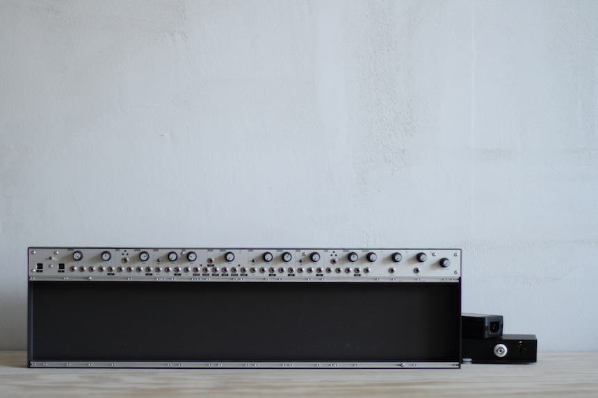

isms
an extensible electronic instrument and composition system encompassing generalized practices and inter-ideological patterns
a collaboration with mannequins
documentation
released in 2015
monome — updated 12/08/23